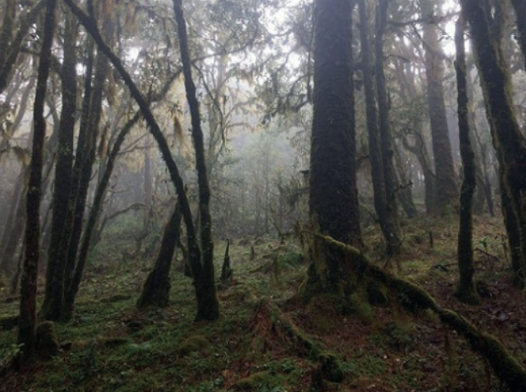
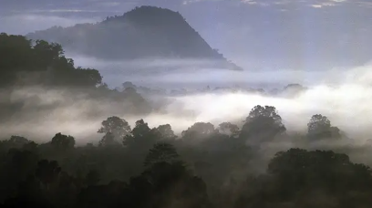
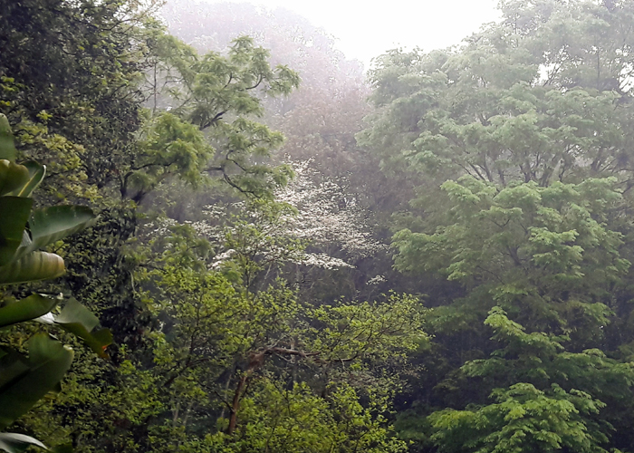
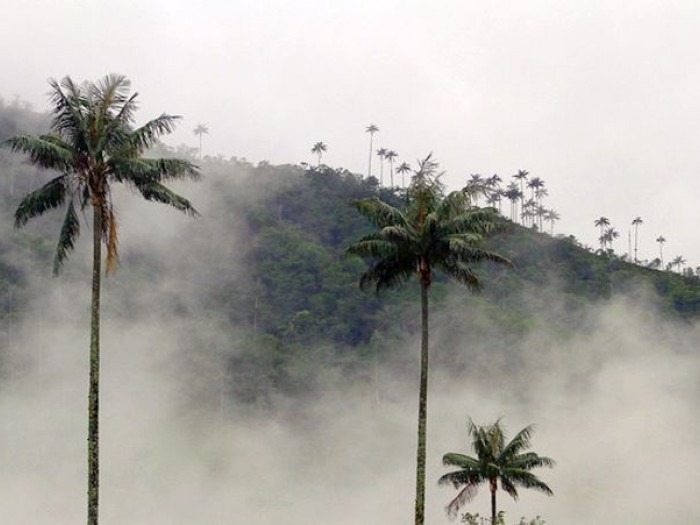
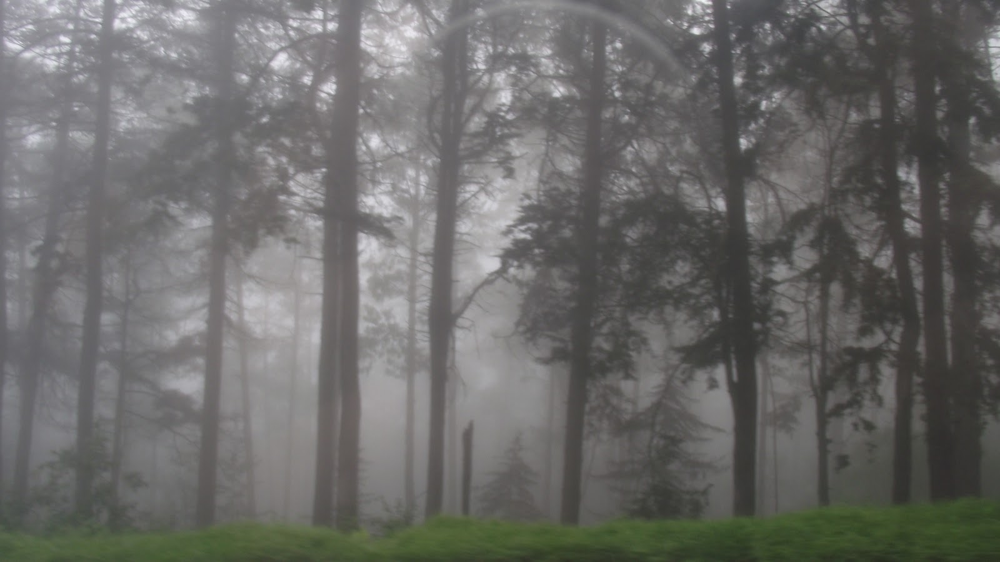
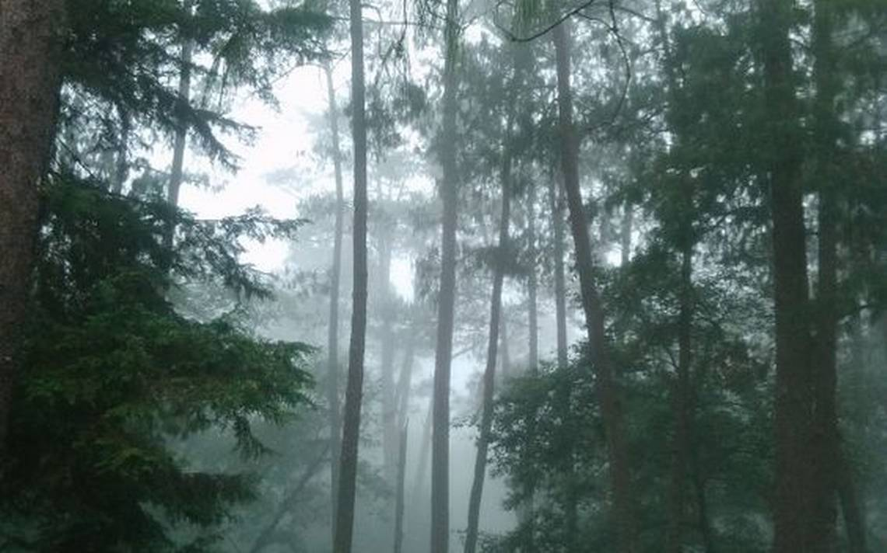

Bosque mesófilo de montaña o bosque de nieblaSe desarrolla en sitios con clima templado y húmedo, en una altitud de 800 a 2400 msnm,
por lo que sus temperaturas son muy bajas, llegando a los 0°C. La época de lluvias dura de 8
a 12 meses y por esta razón es siempre verde. Lo cubre al amanecer y anochecer una neblina
abundante que provoca una gran humedad atmosférica



La vegetación está dominada por liquidámbar, especies de encino y oyamel, entre otras
muchas, con gran riqueza de orquídeas. Los bosques de México no se apegan a las
características generales de este ecosistema, ya que los árboles son altos y dominan árboles
de clima templado.



Actualmente, debido a la sobreexplotación forestal y ganadera, cuenta con una décima
parte del 1% que tenía en la década de los setenta.
La fauna está representada por arañas, ácaros y pseudoescorpiones; insectos como
pulgones, mariposas, escarabajos y hormigas; entre los vertebrados y se presentan ranas,
sapos y algunas salamandras; reptiles como víbora de cascabel y lagartijas; aves como
águilas y búhos; mamíferos como murciélagos, ratón de campo, ardillas, armadillo, venado
cola blanca, coyote y zorra gris.
Angel Esteban Tabardillo BrionesDayann Gerardo Cordova ArmendarizJuan Pablo Ortiz GonzalesIvan Alberto Rodriguez HernandezJose Rigoberto Martinez Peraza